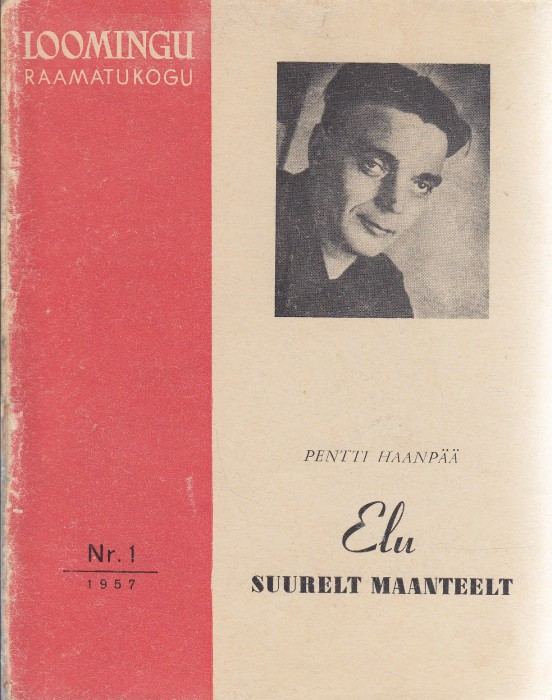

Eesti tõlkekirjanduse ajalugu
1525 – 1800 · Kirjakultuuri teke
Eesti kirjakultuur on sündinud tõlkest. Kõige vanemad teadaolevad eestikeelsed trükised, luterlikud katekismused 16. sajandist, on tõlked. Valdavalt saksa keelest ja vaimuliku kirjasõna näited. Katekismuste ehk lühikeste usuõpetuse käsiraamatute kõrval kuuluvad kõige varasemate tõlgete hulka ka piibli kirjakohad, mis olid esimesed sammud piibli täieliku tõlkeni jõudmisel (1739), lauluraamatud, palveraamatud, jutluseraamatud ja teised vaimulikud trükised.
18. sajandil hakkas eestikeelsete tõlgete hulka lisanduma ilmalikke ja praktilisi tekste. Tarbekirjanduse eesmärk oli jagada talurahvale igapäevaeluks vajalikke teadmisi – tervishoiu, põllumajanduse, majapidamise ja toitumise kohta. Sageli ilmusid need tekstid kalendrites, ajakirjades ja käsiraamatutes ning olid kirjutatud lihtsas ja arusaadavas keeles.
Vaimulik kirjasõna


Tarbekirjandus
1525 – 1800 · Kirjakultuuri teke
Eesti kirjakultuur on sündinud tõlkest. Kõige vanemad teadaolevad eestikeelsed trükised, luterlikud katekismused 16. sajandist, on tõlked. Valdavalt saksa keelest ja vaimuliku kirjasõna näited.
18. sajandil hakkas eestikeelsete tõlgete hulka lisanduma ilmalikke ja praktilisi tekste.
Vaimulik kirjasõna
Tarbekirjandus
"Ehatuule maa"
Ilmumise aasta: 1988
Originaalkeel: eesti
Autor: Uku Masing
Raamatu pealkiri
Ilmumise aasta: 1972
Originaalkeel: saksa
Autor: Autor Nimi
Tõlkija: Tõlkija Nimi